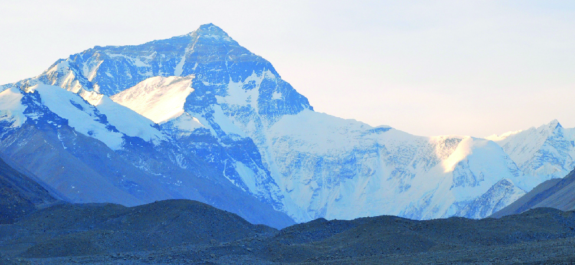

તસવીરમાં બરફથી ઢંકાયેલી પર્વતમાળા દેખાય છે.
29,000 ફૂટ કરતાં વધુ ઊંચાઈએ આવેલો માઉન્ટ એવરેસ્ટ જમીન પરનું સૌથી ઊંચું શિખર છે. નેપાળ અને ચીનની સરહદે આવેલો માઉન્ટ એવરેસ્ટ તેની અત્યંત કઠોર આબોહવા માટે પણ જાણીતો છે. શિખરની નજીક તાપમાન થીજવાના તાપમાનથી ઉપર કદી જતું નથી. દર વર્ષે વિશ્વભરના પર્વતારોહકો આ પ્રચંડ ઊંચાઈ સર કરવાના પ્રયાસમાં અત્યંત કઠિન પરિસ્થિતિઓનો સામનો કરે છે. તેમાંથી માત્ર કેટલાક જ સફળ થાય છે. પર્વતારોહકો અનુભવતા ઊંચાઈના મોટા ફેરફારો અને તાપમાનના ફેરફારો વર્ણવવા માટે શૂન્યથી ઉપર અને નીચે બંને તરફ વિસ્તરતી સંખ્યાઓ વાપરવી જરૂરી છે. આ પ્રકરણમાં આપણે આ પ્રકારની સંખ્યાઓ અને તેમની સાથે કરવામાં આવતી ક્રિયાઓ વર્ણવીશું.